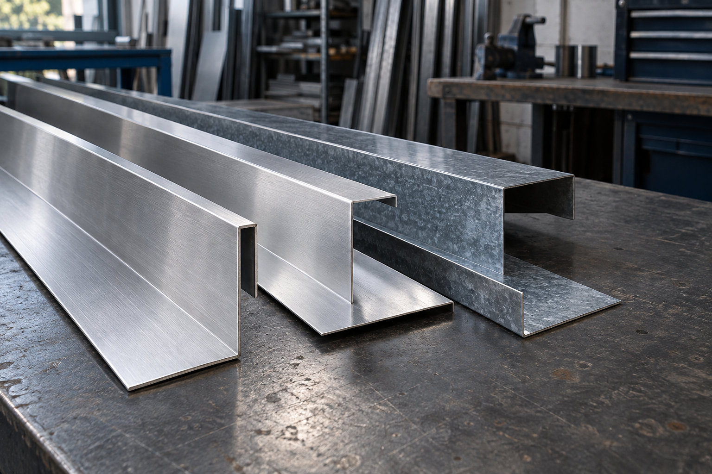

Flashings. Fabrication. Powder coating.
SHEET METAL
FABRICATORS.
Bespoke metal flashings, sheet-metal fabrication and in-house powder coating. Made in Littlehampton for jobs of every size.
Let’s talk about your job ↗YOUR SPECIFICATION.
OUR KIND OF WORK.
A small folded part or a full set of building details. Find what you need, then talk it through with the team.
ONE WORKSHOP.
MORE POSSIBILITIES.
Practical people and the equipment to back them up. Fabrication and finishing come together at our Littlehampton workshop.
Speak to the workshop ↗THE DETAILS BEHIND
PLACES YOU KNOW.
Amex Stadium
Brighton
FFS supplied the secondary support and screed partitioning flashings for Brighton’s Amex Community Stadium.
Specialist metalwork that becomes part of a much bigger build.
LET’S MAKE
IT WORK.
Tell us what you’re working on. A drawing is helpful if you have one, but you can start with a few details.
Find us in LittlehamptonUnits 1, 2 & 4 Harwood Centre
Harwood Road, Littlehampton
West Sussex, BN17 7ATView location ↗